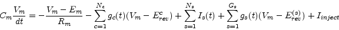
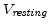

Subsections
CbNeuron
The membrane voltage Vm is governed by

with the following meanings of symbols
- Cm membrane capacity (Farad)
- Em reversal potential of the leak current (Volts)
- Rm membrane resistance (Ohm)
- Nc total number of channels (active + synaptic)
- gc(t) current conductance of channel c (Siemens)
- Erevc reversal potential of channel c (Volts)
- Ns total number of current supplying synapses
- Is(t) current supplied by synapse s (Ampere)
- Gs total number of coductance based synapses
- gs(t) coductance supplied by synapse s (Siemens)
- Erev(s) reversal potential of synapse s (Volts)
- Iinject injected current (Ampere)
At time t=0 Vm ist set to Vinit .
The value of Em is calculated to compensate for ionic currents such that Vm actually has a resting value of
 .
If the membrane voltage Vm exceeds the threshold Vtresh the CbNeuron sends a spike to all its outgoing synapses.
The membrane voltage is reseted and clamped during the absolute refractory period of length Trefract to Vreset if the flag doReset=1. This is similar to a LIF neuron (see LifNeuron).
If the flag doReset=0 the membrane voltage is not reseted and the above equation is also applied during the absolute refractory period but the event of threshold crossing is transmitted as a spike to outgoing synapses. This is usfull if one includes channels which produce a real action potential (see HH_K_Channel and HH_Na_Channel) but one still just wants to communicate the spikes as events in time.
The exponential Euler method is used for numerical integration.
- Vthresh (V) :
- If Vm exceeds Vthresh a spike is emmited.
- Vreset (V) :
- The voltage to reset Vm to after a spike.
- doReset (flag) :
- Flag which determines wheter Vm should be reseted after a spike
- Trefract (sec) :
- Length of the absolute refractory period.
- nummethod (flag) :
- Numerical method for the solution of the differential equation: Exp. Euler = 0, Crank-Nicolson = 1
- type :
- Type (e.g. inhibitory or excitatory) of the neuron
- Cm (F) :
- The membrane capacity Cm
- Rm (Ohm) :
- The membrane resistance Rm
- Vresting (V) :
- The resting membrane voltage.
- Vinit (V) :
- Initial condition forVm at time t=0.
- VmScale (V) :
- Defines the difference between Vresting and the Vthresh for the calculation of the iongate tables and the ionbuffer Erev.
- Inoise (W2) :
- Variance of the noise to be added each integration time constant.
- Iinject (A) :
- Constant current to be injected into the CB neuron.
- Em (V) :
- The reversal potential of the leakage channel
- Vm (V) :
- The membrane voltage
- Isyn :
- synaptic input current
- Gsyn :
- synaptic input conductance
- nIncoming :
- Number of incoming synapses
- nOutgoing :
- Number of outgoing synapses
- nBuffers :
- Number of ion buffers
- nChannels :
- Number of channels